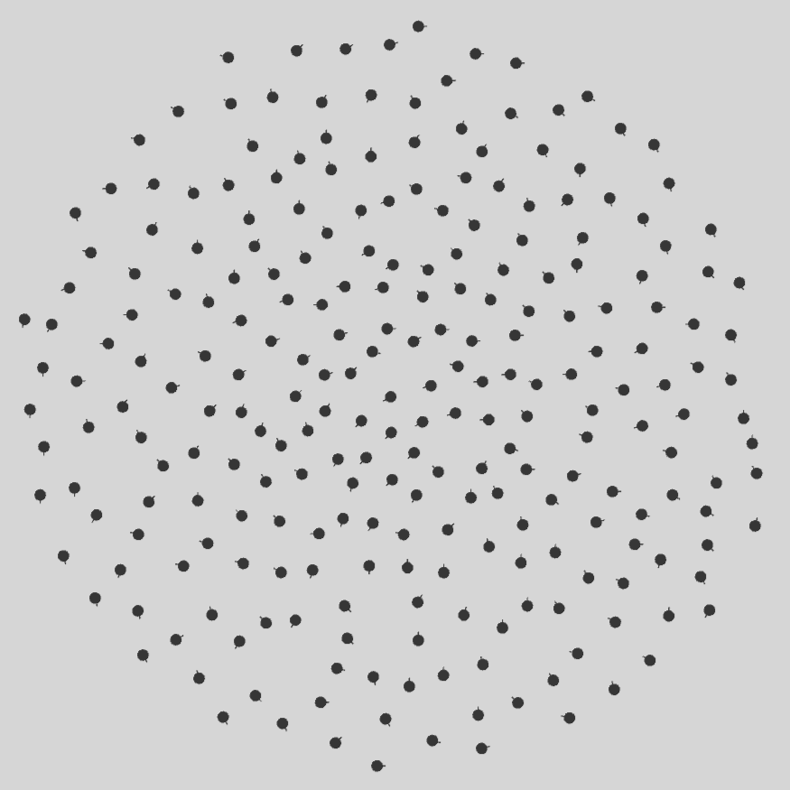

RVO Pathing
Situationally Sensitive Path Planning - RVO/HRVO Implementation & Parallelization
Our original StreetSim V1.0 implementation saw us using Unity’s in-built NavMesh navigation and collision avoidance model to control virtual pedestrians’ movements. However, we soon realized that NavMesh is insufficient for our needs. Mostly because NavMesh caused all agents to follow the shortest path at all times and created unrealistic single-file lines of pedestrians all moving in the same trajectory. NavMesh also doesn’t work well with large crowds.
I took this opportunity to explore how we can implement our own custom version of collision avoidance and wayfinding. One of the core models that caught my attention and I saw a lot of potential in is Reciprocal Velocity Obstacles (RVO). My other colleague, Kaishuu, would end up tackling the wayfinding component of our updated system while I focused on the collision avoidance methodology.
Goal
My primary goal is to not only replicate the operations of the original van den Berg Reciprocal Velocity Obstacles (RVO) implementation in Unity, but also optimize it for large numbers of agents while in simulation. Some of my work here is extrapolated from Meng Guo’s RVO_Py_MAS implementation, though it has been cleaned up and optimized for C# and .Net operations. Below is a strict comparison between all three variants:
| Operational Component | RVO v1.1 (van den Berg) | RVO_Py_MAS** (Meng Guo) | RVO-Pathing (This) |
|---|---|---|---|
| Neighbor Search | KDTree (Parallelized) | Global List Iteration | KDTree (Jobs) |
| Penalty Cost | Time To Collision (Parallelized) | Diff. from Desired Velocity | Diff. from Desired Velocity (Jobs) |
| Static Obstacles? | Yes | Yes | No |
| Acceleration during RVO Penalty Cost? | Yes | No | No |
| Acceleration during Agent Update? \(^1\) | Yes | No | Yes |
\(^1\) Acceleration can be implemented to smoothen movement, making agents move more naturally.
In addition to just the original RVO, I also strove to implement Hybrid Reciprocal Velocity Obstacles. Furthermore, I aimed to replicate some of the parallelization skills I learned from my time with Boundary SPH to really optimize RVO/HRVO operations. Though this project doesn’t use the GPU, it does utilize Unity’s Job system to parallelize operations on the CPU.
NoteDownload the report here
My work here has been influential in one publication: “Situationally Sensitive Path Planning”. You can download the report here: Download Manuscript PDF (5.04 mB)
Code Inspiration
- RVO v1.1 Library: https://gamma.cs.unc.edu/RVO2/documentation/1.1/
- Unity KDTree Implementation: https://github.com/viliwonka/KDTree
- Unity Markdown Viewer: https://github.com/gwaredd/UnityMarkdownViewer
Reciprocal Velocity Obstacles (RVO) [1] is largely built off Fiorini and Shiller’s “Velocity Obstacles” concept [2]. In basic terms, imagine if you are walking down the street and you see another person coming towards you from the opposite end of the sidewalk. During that moment, you must make a decision on which direction to move towards, in order to avoid colliding with them. A Velocity Obstacle (VO) is a geometric version of that decision, represented usually as a triangular cone starting from yourself towards that other person. Any velocities you choose that end up landing you inside that VO will inevitably lead you to collide with the other person. So in the traditional VO sense, all you have to do is choose a velocity that is outside the VO, and you’re guaranteed to avoid hitting that other person.
What’s wrong with the VO method?
In practice, VO’s apparently don’t work very well. What ends up happening is that maybe in the first frame, two agents heading towards each other will chose to maneuver out of the way of each other in that frame, then they move accordingly (i.e. both agents move left relative to their current heading, thus beginning a synchronous rotation around each other). However, in the next frame, the two agents will then move towards their original heading, which forces them in the next frame to readjust again. In short, you see a kind of “staggering” motion where the collision avoidance trajectory ends up looking like a a bunch of squigglies. Not the smoothest approach. [3]
What does RVO fix?
van den Berg’s RVO implementation attempts to solve this issue by making some assumptions. It modifies the original operation by assuming that all agents are operating under the same collision avoidance strategy, meaning all agents are using the same mentality to avoid hitting one another. They implement some form of prediction as a result - they “slightly” nudge the agent towards an optimal velocity (i.e. they move only halfway towards the optimal velocity) and then perform the VO under the assumption that the other agent has also nudged themselves towards their optimal velocity. This allows for a much smoother avoidance strategy as all agents believe that the other is interested in avoiding collisions.
Is RVO theoretically guaranteed? Theory vs. Practice
In theory, the proof of RVO guarantees for collision avoidance is valid, but only under the assumption that there are only two agents in the environment with no interruptions - i.e. it’s just an open world with no obstacles and as much space as they need. In fact, RVO should technically fail if you introduce a 3rd agent, simply because two agents may end up choosing an optimal velocity that allows them to avoid the 3rd agent… but in doing so they may collide with one another. However, in practice, RVO works much better than expected. There’s some logical reasoning behind this:
- In theory, RVO echoes concepts from gradient-based methods that can be optimized using a cost minimization function (i.e. gradient descent). In a traditional gradient method, the conditions do not change across iteration steps - the primary limiting factor is just the amount of processing time you need to find some minimum or maximum of a curve.
- However, RVO isn’t a true gradient-based methodology. In RVO, conditions change with each iteration step: agents will slightly nudge themselves towards (half of) their optimal velocity, and then will have to re-evaluate the optimal velocity. So a generalizable minimization solver isn’t possible with RVO, nor should it be expected in practice.
- Going back to the 3-agent scenario, because the situation has changed from one frame to the next, The two agents that were projected to collide with one another may in fact adjust their optimal velocities to avoid hitting each other while still avoiding the 3rd agent, for example. Over time, the agents will inevitably lead themselves to a happy middle ground where everyone avoids hitting each other, if calibrated properly.
This is why in practice, RVO is sufficiently suitable for basic local collision avoidance modeling in simulations and games.
Are there other versions of VO’s?
You’d want to look at other methods such as van den Berg’s “Optimal Reciprocal Collision Avoidance” (ORCA, otherwise known as RVO2) [4] and Hybrid RVO (HRVO) [5]. However, this repository doesn’t explore these fully as RVO is sufficient for our needs.
Relevant References:
- Jur van den Berg, Ming Lin, and Dinesh Manocha. 2008. Reciprocal Velocity Obstacles for real-time multi-agent navigation. In 2008 IEEE International Conference on Robotics and Automation, 1928–1935. DOI:https://doi.org/10.1109/ROBOT.2008.4543489
- Fiorini P, Shiller Z. Motion Planning in Dynamic Environments Using Velocity Obstacles. The International Journal of Robotics Research. 1998;17(7):760-772. doi:https://doi.org/10.1177/027836499801700706
- Ben Sunshine-Hill. 2019. RVO and ORCA: How they really work. In Game AI Pro 360: Guide to Movement and Pathfinding. CRC Press, 245-256. https://www.taylorfrancis.com/chapters/edit/10.1201/9780429055096-22/rvo-orca-ben-sunshine-hill
- van den Berg, J., Guy, S.J., Lin, M., Manocha, D. (2011). Reciprocal n-Body Collision Avoidance. In: Pradalier, C., Siegwart, R., Hirzinger, G. (eds) Robotics Research. Springer Tracts in Advanced Robotics, vol 70. Springer, Berlin, Heidelberg. https://doi.org/10.1007/978-3-642-19457-3_1
- Jamie Snape, Jur van den Berg, Stephen J. Guy, and Dinesh Manocha. 2011. The Hybrid Reciprocal Velocity Obstacle. IEEE Transactions on Robotics 27, 4 (2011), 696-706. DOI:https://doi.org/10.1109/TRO.2011.2120810
- M. Guo and M. M. Zavlanos. 2018. Multirobot Data Gathering Under Buffer Constraints and Intermittent Communication. IEEE Transactions on Robotics 34, 4 (2018), 1082–1097. DOI:https://doi.org/10.1109/TRO.2018.2830370

- Torrens, P. M., Kim, R., & Shinozaki-Conefrey, K. (2025). Situationally sensitive path planning. Algorithms, 18(7). URL: https://www.mdpi.com/1999-4893/18/7/388, doi:10.3390/a18070388
- Full PaperBibtex